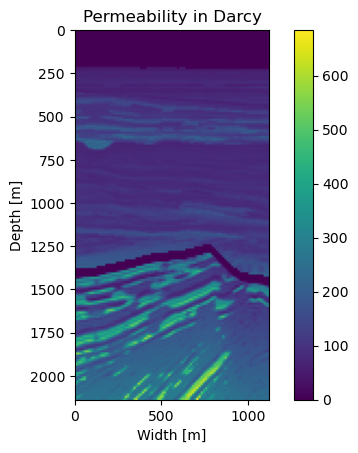
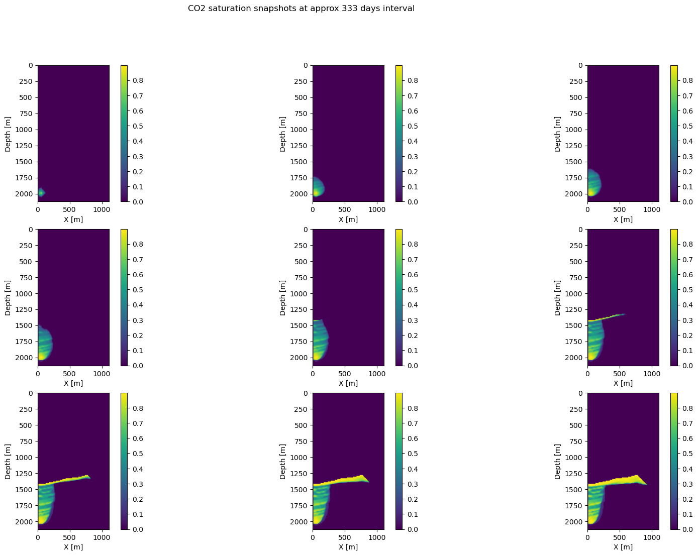
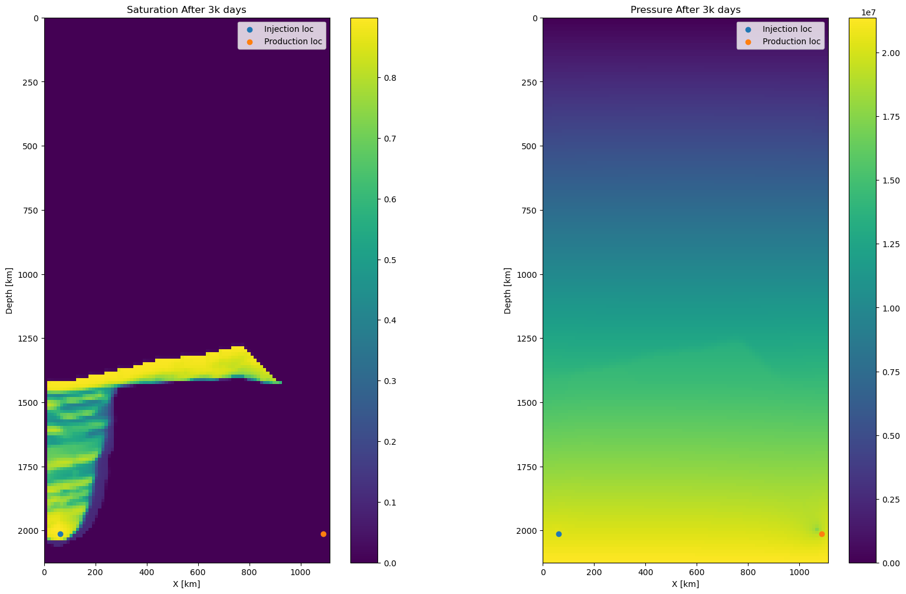

# The packages necessary for running the code below
using PyPlot, LinearAlgebra, JLD2, Polynomials, JutulDarcyRulesQuestions
In [6]:
In [7]:
# For the first time, run this cell twice to download data and then load the data
if ~isfile("BGCompass_tti.jld2")
run(`wget -q -O BGCompass_tti.jld2 "https://www.dropbox.com/scl/fi/gs0eh2ldv9til0r7cg27n/BGCompass_tti.jld2?rlkey=bs2sil1ljiztl5bytlqghcm82&st=s5dnrjoh&dl=1"`)
else
JLD2.@load "BGCompass_tti.jld2" m d
end2-element Vector{Symbol}:
:m
:dIn [8]:
# Some necessary type conversions and defining size of velocity
v = Float64.(sqrt.(1f0./m));
d = Float64.(d);
n = size(v)(325, 171)In [9]:
# A basic function to find water bottom layer index values (You do not need to modify this)
function find_water_bottom(m::AbstractArray{avDT,2};eps = 1e-4) where {avDT}
# return the indices of the water bottom of a seismic image
n = size(m)
idx = zeros(Integer, n[1])
for j=1:n[1]
k=1
while true
if abs(m[j,k]) > eps
idx[j] = k
break
end
k += 1
end
end
return idx
end
# Changing velocity model to permeability
function VtoK(v::Matrix{T}, d::Tuple{T, T}; α::T=T(10)) where T
n = size(v)
idx_wb = find_water_bottom(v.-minimum(v))
idx_ucfmt = find_water_bottom((v.-T(3.5)).*(v.>T(3.5)))
Kh = zeros(T, n)
capgrid = Int(round(T(50)/d[2]))
for i = 1:n[1]
Kh[i,1:idx_wb[i]-1] .= T(1e-10) # water layer
Kh[i,idx_wb[i]:idx_ucfmt[i]-capgrid-1] .= α*exp.(v[i,idx_wb[i]:idx_ucfmt[i]-capgrid-1])
Kh[i,idx_ucfmt[i]-capgrid:idx_ucfmt[i]-1] .= T(1e-3)
Kh[i,idx_ucfmt[i]:end] .= α*exp.(v[i,idx_ucfmt[i]:end]) .- T(320)
end
return Kh
end
Kh = VtoK(v, d);
# This part is used to create priority (You do not need to modify this)
idx_wb = find_water_bottom(v.-minimum(v));
idx_ucfmt = find_water_bottom((v.-3.5).*(v.>3.5))
phi = zeros(Float64,n)
for i = 1:n[1]
for j = 1:n[2]
p = Polynomial([-0.0314^2*Kh[i,j],2*0.0314^2*Kh[i,j],-0.0314^2*Kh[i,j],1.527^2])
phi[i,j] = minimum(real(roots(p)[findall(real(roots(p)).== roots(p))]))
end
for j = idx_ucfmt[i]:idx_ucfmt[i]+8
phi[i,idx_ucfmt[i]:idx_ucfmt[i]+8] = Float64.(range(0.056,stop=0.1,length=9))
end
endIn [10]:
# We will use a subset of permeability model to make simulation faster .
Kh = Kh[151:240, :]
K = Float64.(Kh * JutulDarcyRules.md);
n = (size(K,1), 1, size(K,2))
d = (d[1], 50.0, d[2])
phi = phi[151:240, :]
phi_m = convert(Array{Float64,1},vec(phi));
ϕ = phi
# We set boundary values of porosity to 1e8. This will prevent over pressurization.
ϕ[1,:] .= 1e8
ϕ[:,1] .= 1e8
ϕ[end,:] .= 1e8
ϕ[:,end] .= 1e8
ϕ = convert(Array{Float64,1},vec(ϕ));In [11]:
# Plot permeability map
imshow(Kh', extent = [0, size(Kh,1) *d[1], size(Kh,2) *d[3], 0]); colorbar(); xlabel("Width [m]"); ylabel("Depth [m]"); title("Permeability in Darcy")
PyObject Text(0.5, 1.0, 'Permeability in Darcy')In [12]:
# Create the model
model = jutulModel(n, d, ϕ, K1to3(K))jutulModel{3, Float64}((90, 1, 171), (12.5, 50.0, 12.5), [1.0e8, 1.0e8, 1.0e8, 1.0e8, 1.0e8, 1.0e8, 1.0e8, 1.0e8, 1.0e8, 1.0e8 … 1.0e8, 1.0e8, 1.0e8, 1.0e8, 1.0e8, 1.0e8, 1.0e8, 1.0e8, 1.0e8, 1.0e8], [9.86923266716013e-26 9.86923266716013e-26 … 2.436621876880626e-13 2.351440606894287e-13; 9.86923266716013e-26 9.86923266716013e-26 … 2.436621876880626e-13 2.351440606894287e-13; 9.86923266716013e-26 9.86923266716013e-26 … 2.436621876880626e-13 2.351440606894287e-13], 0.0)In [13]:
# simulation time steppings (30 days between 2 time samples)
tstep = 30 * ones(100) # This corresponds to 3000 days. 30 is dt and 100 is number of time steps. Keep dt small for stability of solution
tot_time = sum(tstep)
## injection & production (source & sink) location
inj_loc = (5, 1, n[end]-10) .* d
prod_loc = (n[1]-3, 1, n[end]-10) .* d
# injectivity is in m^3 per sec
irate = 5e-2
q = jutulForce(irate, [inj_loc, prod_loc])
## set up modeling operator
S = jutulModeling(model, tstep)
## simulation
mesh = CartesianMesh(model)
T(x) = log.(KtoTrans(mesh, K1to3(exp.(x))))
logK = log.(K)
@time state = S(T(logK), q; info_level=1)Jutul: Simulating 428 weeks, 4 days as 100 report steps
Step 1/100: Solving start to 4 weeks, 2 days, Δt = 4 weeks, 2 days
Step 2/100: Solving 4 weeks, 2 days to 8 weeks, 4 days, Δt = 4 weeks, 2 days
Step 3/100: Solving 8 weeks, 4 days to 12 weeks, 6 days, Δt = 4 weeks, 2 days
Step 4/100: Solving 12 weeks, 6 days to 17 weeks, 1 day, Δt = 4 weeks, 2 days
Step 5/100: Solving 17 weeks, 1 day to 21 weeks, 3 days, Δt = 4 weeks, 2 days
Step 6/100: Solving 21 weeks, 3 days to 25 weeks, 5 days, Δt = 4 weeks, 2 days
Step 7/100: Solving 25 weeks, 5 days to 30 weeks, Δt = 4 weeks, 2 days
Step 8/100: Solving 30 weeks to 34 weeks, 2 days, Δt = 4 weeks, 2 days
Step 9/100: Solving 34 weeks, 2 days to 38 weeks, 4 days, Δt = 4 weeks, 2 days
Step 10/100: Solving 38 weeks, 4 days to 42 weeks, 6 days, Δt = 4 weeks, 2 days
Step 11/100: Solving 42 weeks, 6 days to 47 weeks, 1 day, Δt = 4 weeks, 2 days
Step 12/100: Solving 47 weeks, 1 day to 51 weeks, 3 days, Δt = 4 weeks, 2 days
Step 13/100: Solving 51 weeks, 3 days to 55 weeks, 5 days, Δt = 4 weeks, 2 days
Step 14/100: Solving 55 weeks, 5 days to 60 weeks, Δt = 4 weeks, 2 days
Step 15/100: Solving 60 weeks to 64 weeks, 2 days, Δt = 4 weeks, 2 days
Step 16/100: Solving 64 weeks, 2 days to 68 weeks, 4 days, Δt = 4 weeks, 2 days
Step 17/100: Solving 68 weeks, 4 days to 72 weeks, 6 days, Δt = 4 weeks, 2 days
Step 18/100: Solving 72 weeks, 6 days to 77 weeks, 1 day, Δt = 4 weeks, 2 days
Step 19/100: Solving 77 weeks, 1 day to 81 weeks, 3 days, Δt = 4 weeks, 2 days
Step 20/100: Solving 81 weeks, 3 days to 85 weeks, 5 days, Δt = 4 weeks, 2 days
Step 21/100: Solving 85 weeks, 5 days to 90 weeks, Δt = 4 weeks, 2 days
Step 22/100: Solving 90 weeks to 94 weeks, 2 days, Δt = 4 weeks, 2 days
Step 23/100: Solving 94 weeks, 2 days to 98 weeks, 4 days, Δt = 4 weeks, 2 days
Step 24/100: Solving 98 weeks, 4 days to 102 weeks, 6 days, Δt = 4 weeks, 2 days
Step 25/100: Solving 102 weeks, 6 days to 107 weeks, 1 day, Δt = 4 weeks, 2 days
Step 26/100: Solving 107 weeks, 1 day to 111 weeks, 3 days, Δt = 4 weeks, 2 days
Step 27/100: Solving 111 weeks, 3 days to 115 weeks, 5 days, Δt = 4 weeks, 2 days
Step 28/100: Solving 115 weeks, 5 days to 120 weeks, Δt = 4 weeks, 2 days
Step 29/100: Solving 120 weeks to 124 weeks, 2 days, Δt = 4 weeks, 2 days
Step 30/100: Solving 124 weeks, 2 days to 128 weeks, 4 days, Δt = 4 weeks, 2 days
Step 31/100: Solving 128 weeks, 4 days to 132 weeks, 6 days, Δt = 4 weeks, 2 days
Step 32/100: Solving 132 weeks, 6 days to 137 weeks, 1 day, Δt = 4 weeks, 2 days
Step 33/100: Solving 137 weeks, 1 day to 141 weeks, 3 days, Δt = 4 weeks, 2 days
Step 34/100: Solving 141 weeks, 3 days to 145 weeks, 5 days, Δt = 4 weeks, 2 days
Step 35/100: Solving 145 weeks, 5 days to 150 weeks, Δt = 4 weeks, 2 days
Step 36/100: Solving 150 weeks to 154 weeks, 2 days, Δt = 4 weeks, 2 days
Step 37/100: Solving 154 weeks, 2 days to 158 weeks, 4 days, Δt = 4 weeks, 2 days
Step 38/100: Solving 158 weeks, 4 days to 162 weeks, 6 days, Δt = 4 weeks, 2 days
Step 39/100: Solving 162 weeks, 6 days to 167 weeks, 1 day, Δt = 4 weeks, 2 days
Step 40/100: Solving 167 weeks, 1 day to 171 weeks, 3 days, Δt = 4 weeks, 2 days
Step 41/100: Solving 171 weeks, 3 days to 175 weeks, 5 days, Δt = 4 weeks, 2 days
Step 42/100: Solving 175 weeks, 5 days to 180 weeks, Δt = 4 weeks, 2 days
Step 43/100: Solving 180 weeks to 184 weeks, 2 days, Δt = 4 weeks, 2 days
Step 44/100: Solving 184 weeks, 2 days to 188 weeks, 4 days, Δt = 4 weeks, 2 days
Step 45/100: Solving 188 weeks, 4 days to 192 weeks, 6 days, Δt = 4 weeks, 2 days
Step 46/100: Solving 192 weeks, 6 days to 197 weeks, 1 day, Δt = 4 weeks, 2 days
Step 47/100: Solving 197 weeks, 1 day to 201 weeks, 3 days, Δt = 4 weeks, 2 days
Step 48/100: Solving 201 weeks, 3 days to 205 weeks, 5 days, Δt = 4 weeks, 2 days
Step 49/100: Solving 205 weeks, 5 days to 210 weeks, Δt = 4 weeks, 2 days
Step 50/100: Solving 210 weeks to 214 weeks, 2 days, Δt = 4 weeks, 2 days
Step 51/100: Solving 214 weeks, 2 days to 218 weeks, 4 days, Δt = 4 weeks, 2 days
Step 52/100: Solving 218 weeks, 4 days to 222 weeks, 6 days, Δt = 4 weeks, 2 days
Step 53/100: Solving 222 weeks, 6 days to 227 weeks, 1 day, Δt = 4 weeks, 2 days
Step 54/100: Solving 227 weeks, 1 day to 231 weeks, 3 days, Δt = 4 weeks, 2 days
Step 55/100: Solving 231 weeks, 3 days to 235 weeks, 5 days, Δt = 4 weeks, 2 days
Step 56/100: Solving 235 weeks, 5 days to 240 weeks, Δt = 4 weeks, 2 days
Step 57/100: Solving 240 weeks to 244 weeks, 2 days, Δt = 4 weeks, 2 days
Step 58/100: Solving 244 weeks, 2 days to 248 weeks, 4 days, Δt = 4 weeks, 2 days
Step 59/100: Solving 248 weeks, 4 days to 252 weeks, 6 days, Δt = 4 weeks, 2 days
Step 60/100: Solving 252 weeks, 6 days to 257 weeks, 1 day, Δt = 4 weeks, 2 days
Step 61/100: Solving 257 weeks, 1 day to 261 weeks, 3 days, Δt = 4 weeks, 2 days
Step 62/100: Solving 261 weeks, 3 days to 265 weeks, 5 days, Δt = 4 weeks, 2 days
Step 63/100: Solving 265 weeks, 5 days to 270 weeks, Δt = 4 weeks, 2 days
Step 64/100: Solving 270 weeks to 274 weeks, 2 days, Δt = 4 weeks, 2 days
Step 65/100: Solving 274 weeks, 2 days to 278 weeks, 4 days, Δt = 4 weeks, 2 days
Step 66/100: Solving 278 weeks, 4 days to 282 weeks, 6 days, Δt = 4 weeks, 2 days
Step 67/100: Solving 282 weeks, 6 days to 287 weeks, 1 day, Δt = 4 weeks, 2 days
Step 68/100: Solving 287 weeks, 1 day to 291 weeks, 3 days, Δt = 4 weeks, 2 days
Step 69/100: Solving 291 weeks, 3 days to 295 weeks, 5 days, Δt = 4 weeks, 2 days
Step 70/100: Solving 295 weeks, 5 days to 300 weeks, Δt = 4 weeks, 2 days
Step 71/100: Solving 300 weeks to 304 weeks, 2 days, Δt = 4 weeks, 2 days
Step 72/100: Solving 304 weeks, 2 days to 308 weeks, 4 days, Δt = 4 weeks, 2 days
Step 73/100: Solving 308 weeks, 4 days to 312 weeks, 6 days, Δt = 4 weeks, 2 days
Step 74/100: Solving 312 weeks, 6 days to 317 weeks, 1 day, Δt = 4 weeks, 2 days
Step 75/100: Solving 317 weeks, 1 day to 321 weeks, 3 days, Δt = 4 weeks, 2 days
Step 76/100: Solving 321 weeks, 3 days to 325 weeks, 5 days, Δt = 4 weeks, 2 days
Step 77/100: Solving 325 weeks, 5 days to 330 weeks, Δt = 4 weeks, 2 days
Step 78/100: Solving 330 weeks to 334 weeks, 2 days, Δt = 4 weeks, 2 days
Step 79/100: Solving 334 weeks, 2 days to 338 weeks, 4 days, Δt = 4 weeks, 2 days
Step 80/100: Solving 338 weeks, 4 days to 342 weeks, 6 days, Δt = 4 weeks, 2 days
Step 81/100: Solving 342 weeks, 6 days to 347 weeks, 1 day, Δt = 4 weeks, 2 days
Step 82/100: Solving 347 weeks, 1 day to 351 weeks, 3 days, Δt = 4 weeks, 2 days
Step 83/100: Solving 351 weeks, 3 days to 355 weeks, 5 days, Δt = 4 weeks, 2 days
Step 84/100: Solving 355 weeks, 5 days to 360 weeks, Δt = 4 weeks, 2 days
Step 85/100: Solving 360 weeks to 364 weeks, 2 days, Δt = 4 weeks, 2 days
Step 86/100: Solving 364 weeks, 2 days to 368 weeks, 4 days, Δt = 4 weeks, 2 days
Step 87/100: Solving 368 weeks, 4 days to 372 weeks, 6 days, Δt = 4 weeks, 2 days
Step 88/100: Solving 372 weeks, 6 days to 377 weeks, 1 day, Δt = 4 weeks, 2 days
Step 89/100: Solving 377 weeks, 1 day to 381 weeks, 3 days, Δt = 4 weeks, 2 days
Step 90/100: Solving 381 weeks, 3 days to 385 weeks, 5 days, Δt = 4 weeks, 2 days
Step 91/100: Solving 385 weeks, 5 days to 390 weeks, Δt = 4 weeks, 2 days
Step 92/100: Solving 390 weeks to 394 weeks, 2 days, Δt = 4 weeks, 2 days
Step 93/100: Solving 394 weeks, 2 days to 398 weeks, 4 days, Δt = 4 weeks, 2 days
Step 94/100: Solving 398 weeks, 4 days to 402 weeks, 6 days, Δt = 4 weeks, 2 days
Step 95/100: Solving 402 weeks, 6 days to 407 weeks, 1 day, Δt = 4 weeks, 2 days
Step 96/100: Solving 407 weeks, 1 day to 411 weeks, 3 days, Δt = 4 weeks, 2 days
Step 97/100: Solving 411 weeks, 3 days to 415 weeks, 5 days, Δt = 4 weeks, 2 days
Step 98/100: Solving 415 weeks, 5 days to 420 weeks, Δt = 4 weeks, 2 days
Step 99/100: Solving 420 weeks to 424 weeks, 2 days, Δt = 4 weeks, 2 days
Step 100/100: Solving 424 weeks, 2 days to 428 weeks, 4 days, Δt = 4 weeks, 2 days
Simulation complete: Completed 100 timesteps in 5 minutes, 28 seconds, 391 milliseconds and 467 iterations.
╭────────────────┬───────────┬───────────────┬──────────┬──────────╮
│ Iteration type │ Avg/step │ Avg/ministep │ Time per │ Total │
│ │ 100 steps │ 112 ministeps │ ms │ (wasted) │
├────────────────┼───────────┼───────────────┼──────────┼──────────┤
│ Newton │ 4.67 │ 4.16964 │ 703.1921 │ 467 (0) │
│ Linearization │ 5.79 │ 5.16964 │ 567.1688 │ 579 (0) │
│ Linear solver │ 12.37 │ 11.0446 │ 265.4735 │ 1237 (0) │
╰────────────────┴───────────┴───────────────┴──────────┴──────────╯
╭────────────────┬──────────┬────────────┬──────────╮
│ Timing type │ Each │ Relative │ Total │
│ │ ms │ Percentage │ s │
├────────────────┼──────────┼────────────┼──────────┤
│ Properties │ 7.6169 │ 1.08 % │ 3.5571 │
│ Equations │ 94.8596 │ 16.73 % │ 54.9237 │
│ Assembly │ 48.4451 │ 8.54 % │ 28.0497 │
│ Linear solve │ 276.8640 │ 39.37 % │ 129.2955 │
│ Preconditioner │ 137.7440 │ 19.59 % │ 64.3265 │
│ Update │ 39.5927 │ 5.63 % │ 18.4898 │
│ Convergence │ 19.0519 │ 3.36 % │ 11.0310 │
│ Input/Output │ 4.0826 │ 0.14 % │ 0.4572 │
│ Other │ 39.1010 │ 5.56 % │ 18.2602 │
├────────────────┼──────────┼────────────┼──────────┤
│ Total │ 703.1921 │ 100.00 % │ 328.3907 │
╰────────────────┴──────────┴────────────┴──────────╯
752.044001 seconds (217.33 M allocations: 14.673 GiB, 0.97% gc time, 80.64% compilation time: 4% of which was recompilation)3078000-element jutulStates{Float64}:
0.0
0.0
0.0
0.0
0.0
0.0
0.0
0.0
0.0
0.0
0.0
0.0
0.0
⋮
2.1359426506710764e7
2.1358564024889007e7
2.135696962880001e7
2.135525710614737e7
2.135422023336592e7
2.135430011237757e7
2.135544957914724e7
2.135648684846326e7
2.1359060922351018e7
2.1362910749874525e7
2.1367560687066786e7
2.137222020299839e7In [14]:
# CO2 saturation snapshots
figure(figsize=(20,12));
obs=Int.(round.(range(1, stop=100, length=9))); # 9 observed time samples
for i = 1:9
subplot(3,3,i)
imshow(reshape(Saturations(state.states[obs[i]]), n[1], n[end])', extent=(0,(n[1]-1)*d[1],(n[3]-1)*d[3],0); vmin=0, vmax=maximum(Saturations(state.states[end])))
xlabel("X [m]");ylabel("Depth [m]");
colorbar()
end
suptitle("CO2 saturation snapshots at approx 333 days interval ")
PyObject Text(0.5, 0.98, 'CO2 saturation snapshots at approx 333 days interval ')In [15]:
fig=figure(figsize=(20,12));
#Plot Saturation at the end
subplot(1,2,1);
imshow(reshape(Saturations(state.states[end]), n[1], n[end])', extent=(0,(n[1]-1)*d[1],(n[3]-1)*d[3],0); vmin=0, vmax=maximum(Saturations(state.states[end]))); colorbar(); title("Saturation After 3k days")
xlabel("X [km]");ylabel("Depth [km]");
scatter(inj_loc[1],inj_loc[3])
scatter(prod_loc[1],inj_loc[3])
legend(["Injection loc","Production loc"])
#Plot Pressure at the end
subplot(1,2,2);
imshow(reshape(Pressure(state.states[end]), n[1], n[end])', extent=(0,(n[1]-1)*d[1],(n[3]-1)*d[3],0); vmin=0, vmax=maximum(Pressure(state.states[end]))); colorbar(); title("Pressure After 3k days")
xlabel("X [km]");ylabel("Depth [km]");
scatter(inj_loc[1],inj_loc[3])
scatter(prod_loc[1],inj_loc[3])
legend(["Injection loc","Production loc"])
PyObject <matplotlib.legend.Legend object at 0x2aac4123e9c0>In [16]:
maximum(Saturations(state.states[end]))0.8984886621298521In [17]:
# Save saturation and pressure data in JLD2 format
JLD2.@save "example_sat_press.jld2" stateQ1) What do you see in the time-varying CO2 saturation snapshots? How do you interpret the movement of CO2? What role does production well playing here? (20 marks)
Q2) What role does production well playing here? (20 marks)
Q2) The above experiment is for 3k days. Re-run the experiment for different times such as 1k, 2k, 4k, and 5k days. Show saturation and pressure maps for these days. Show total 8 images. (40 marks)
Q3) (a) Calculate the amount of CO2 in the reservoir after 300 days of injection. (10 marks)
Q3) (b) Calculate the amount of CO2 in the reservoir at the end of injection. (10 marks)
(Hint: sum(state.states[write array index].Saturations.phi_m)prod(model.d))
Q4) Play with the seal region of permeability map to create a fault (very high permeability 500 mD say) in small region of seal. Re-run the experiment to see if CO2 leaks out from the seal. Showing saturation map is enough here. (Bonus 10 point)